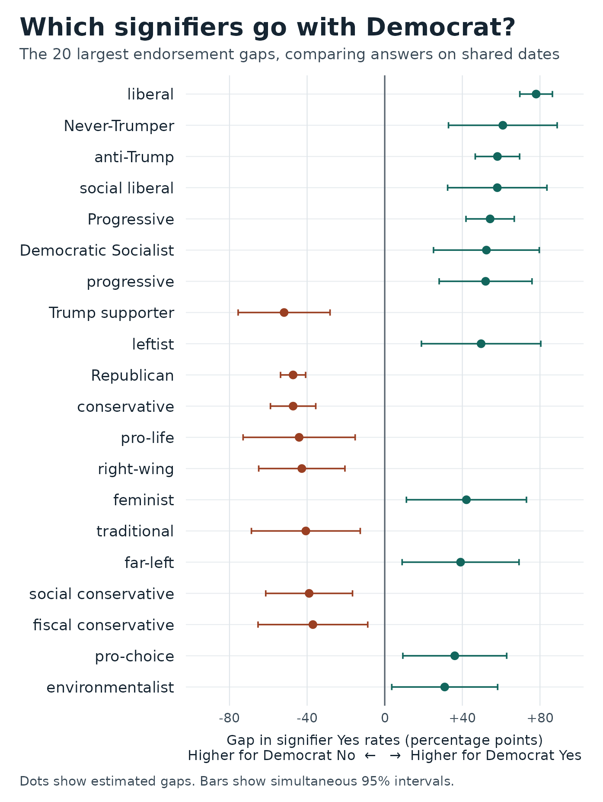

A daily study of the self
The signifiers that distinguish Democrat Yes from No

Liberal was the strongest clue that an Ipseity Daily respondent said Yes to Democrat. When the two groups were compared on the same survey dates, 91% of the Democrat Yes group said liberal described them, compared with 13% of the Democrat No group. That 78 percentage point gap was the largest in either direction. The other leading labels show how party identity goes together with ideology, attitudes toward Trump, and descriptions people may use in everyday life.
The chart ranks the 20 signifiers by the size of the gap, whichever group used the label more. A dot to the right means more people in the Democrat Yes group used that label. A dot to the left means more people in the Democrat No group used it. The distance from zero shows how strongly the word separated the groups in this sample.
Party, ideology, and Trump
The Democrat Yes side included social liberal, Democratic Socialist, leftist, and far-left. The survey records Progressive and progressive as separate signifiers, and both appear in the ranking. Their estimates come from separate sets of answers, which leaves the effect of capitalization open. The range of labels suggests that saying Yes to Democrat can go with both broad ideological descriptions and more specific political identities. A person can adopt the party label while leaving finer questions of ideology open.
On the Democrat No side, Republican was a strong clue, as were conservative and right-wing. Still, the adjusted Republican Yes rate among those who said No to Democrat was 48%. That leaves a large share who said No to both party labels. They might include independents, people drawn to other parties, or people who prefer to describe themselves without party terms. A label can give you a strong clue when someone uses it and still miss many of the people in the group it points toward.
The Trump labels show a similar mix of division and overlap. Trump supporter had the largest gap toward Democrat No, while Never-Trumper and anti-Trump ranked near the top toward Democrat Yes. In the anti-Trump comparison, 34% of people who answered No to Democrat still said anti-Trump described them. Opposition to a political figure can cross party lines, and a self-description leaves open how someone voted.
Issue labels reach across groups
The label pro-life leaned toward Democrat No and pro-choice toward Democrat Yes. Yet pro-choice drew a Yes from a majority in both groups, with adjusted rates of 93% and 57%, respectively. That is a sizeable gap around a label with broad appeal in this sample. The abortion labels were compared separately, so the group rates leave open how particular respondents combined them. The same label can distinguish groups and still give many people in both groups a way to describe themselves.
The appearance of feminist and environmentalist on the Democrat Yes side suggests that identities associated with social movements can carry information about party identity. On the Democrat No side, social conservative and fiscal conservative show that people can describe their political outlook in terms of social values or public spending. The label traditional had a large gap too. Someone might use that word to describe family customs, religious practice, or a preference for continuity. Its place on the list reveals an association with the party answer and leaves room for different meanings.
How the comparison worked
Ipseity Daily asks American adults whether words or phrases describe them today. The snapshot through November 20, 2026 contained 794,745 answers from 10,176 respondent-days and 5,468 distinct respondents. The analysis used 558,873 answers from 9,834 respondent-days and 5,313 people. A respondent-day is one person's survey on one date. Of the Democrat answers, 4,729 were Yes and 5,105 were No. Across dates, 120 people gave both answers at different times, so the comparison follows the answer people gave that day.
Each comparison used only surveys where the respondent answered both the signifier and Democrat. I kept dates with answers from both Democrat groups and gave more weight to dates with more answers and a better balance between groups. In all, 703 signifiers had enough observations and people in both groups to rank. The intervals account for people answering on multiple dates and for screening so many labels. All 20 displayed gaps stayed on one side of zero in the simultaneous 95% intervals. Many bars overlap, leaving uncertainty about the exact order.
Each comparison can draw on a different set of survey dates and respondents because the survey asks different sets of signifiers. The newest date may still be incomplete. These patterns describe self-identification among surveyed adults. Estimating the same gaps for all U.S. adults or explaining what causes someone to identify as a Democrat would require different evidence.
Read the complete R analysis
#!/usr/bin/env Rscript
suppressPackageStartupMessages(library(tidyverse))
Sys.setenv(TZ = "UTC")
options(OutDec = ".")
data_path <- Sys.getenv("IPSEITY_DATA_PATH", "data/ipseity.csv.gz")
schema <- c(
"endorsed", "signifier", "observation_date", "hashed_respondent_id",
"demographics_status", "age", "sex", "ethnicity", "birth_country",
"residence_country", "nationality", "language", "student", "employment",
"time_on_task", "approvals"
)
raw <- read_csv(
data_path,
col_types = cols(
.default = col_character(),
endorsed = col_integer(),
observation_date = col_date(),
age = col_double()
),
show_col_types = FALSE
)
stopifnot(
identical(names(raw), schema),
nrow(problems(raw)) == 0L,
nrow(raw) == 794745L,
all(raw$endorsed %in% 0:1),
!anyNA(raw$observation_date),
max(raw$observation_date) == as.Date("2026-11-20"),
all(!is.na(raw$signifier) & nzchar(raw$signifier)),
all(str_detect(raw$hashed_respondent_id, "^[[:xdigit:]]{12}$")),
all(raw$demographics_status %in% c("available", "consent_revoked", "data_expired")),
!anyDuplicated(raw[c("hashed_respondent_id", "observation_date", "signifier")])
)
responses <- raw |>
select(hashed_respondent_id, observation_date, signifier, endorsed)
democrat <- responses |>
filter(signifier == "Democrat") |>
select(-signifier, democrat = endorsed)
stopifnot(!anyDuplicated(democrat[c("hashed_respondent_id", "observation_date")]))
# A pair requires a completed answer to both signifiers on the same day.
matched <- responses |>
filter(signifier != "Democrat") |>
inner_join(
democrat,
by = c("hashed_respondent_id", "observation_date"),
relationship = "many-to-one"
)
date_totals <- matched |>
group_by(signifier, observation_date) |>
summarise(
yes_n = sum(democrat == 1),
no_n = sum(democrat == 0),
yes_endorsed = sum(endorsed[democrat == 1]),
no_endorsed = sum(endorsed[democrat == 0]),
.groups = "drop"
) |>
filter(yes_n > 0, no_n > 0) |>
mutate(
day_n = yes_n + no_n,
day_democrat_rate = yes_n / day_n,
day_signifier_rate = (yes_endorsed + no_endorsed) / day_n,
weight = yes_n * no_n / day_n
)
overlap <- matched |>
inner_join(
select(date_totals, signifier, observation_date),
by = c("signifier", "observation_date"),
relationship = "many-to-one"
)
min_answers <- 50L
min_people <- 20L
eligible <- overlap |>
group_by(signifier) |>
summarise(
yes_obs = sum(democrat == 1),
no_obs = sum(democrat == 0),
yes_people = n_distinct(hashed_respondent_id[democrat == 1]),
no_people = n_distinct(hashed_respondent_id[democrat == 0]),
people = n_distinct(hashed_respondent_id),
dates = n_distinct(observation_date),
.groups = "drop"
) |>
filter(
yes_obs >= min_answers, no_obs >= min_answers,
yes_people >= min_people, no_people >= min_people
)
comparison_count <- nrow(eligible)
stopifnot(comparison_count > 20L)
# Both groups are standardized to the same dates for each signifier.
# The overlap weights give more weight to larger, better balanced dates.
# This weighted gap is also the slope from a regression with date fixed effects.
estimates <- date_totals |>
semi_join(eligible, by = "signifier") |>
group_by(signifier) |>
summarise(
yes_rate = weighted.mean(yes_endorsed / yes_n, weight),
no_rate = weighted.mean(no_endorsed / no_n, weight),
weight_sum = sum(weight),
.groups = "drop"
) |>
mutate(gap = yes_rate - no_rate)
# Cluster the regression scores by respondent across all of their survey dates.
# Centering both variables within date absorbs the date fixed effects.
eligible_rows <- overlap |>
semi_join(eligible, by = "signifier")
variance <- eligible_rows |>
inner_join(
select(date_totals, signifier, observation_date, day_democrat_rate, day_signifier_rate),
by = c("signifier", "observation_date"),
relationship = "many-to-one"
) |>
inner_join(select(estimates, signifier, gap), by = "signifier", relationship = "many-to-one") |>
mutate(
centered_democrat = democrat - day_democrat_rate,
residual = endorsed - day_signifier_rate - gap * centered_democrat
) |>
group_by(signifier, hashed_respondent_id) |>
summarise(score = sum(centered_democrat * residual), .groups = "drop") |>
group_by(signifier) |>
summarise(score_sum_squares = sum(score^2), .groups = "drop")
confidence <- 0.95
ranked <- estimates |>
inner_join(eligible, by = "signifier", relationship = "one-to-one") |>
inner_join(variance, by = "signifier", relationship = "one-to-one") |>
mutate(
observations = yes_obs + no_obs,
model_parameters = dates + 1L,
correction = people / (people - 1) *
(observations - 1) / (observations - model_parameters),
se = sqrt(correction * score_sum_squares) / weight_sum,
critical = qt(1 - (1 - confidence) / (2 * comparison_count), df = people - 1),
lower = pmax(-1, gap - critical * se),
upper = pmin(1, gap + critical * se)
) |>
arrange(desc(abs(gap)), signifier, .locale = "C") |>
mutate(rank = row_number())
stopifnot(nrow(ranked) == comparison_count, all(is.finite(ranked$se)))
top <- slice_head(ranked, n = 20L)
runner_up <- slice(ranked, 21L)
stopifnot(!any(str_detect(top$signifier, "[@\\p{Cc}]|[[:xdigit:]]{12}")))
counts <- function(data) {
c(
observations = nrow(data),
respondent_days = n_distinct(data$hashed_respondent_id, data$observation_date),
respondents = n_distinct(data$hashed_respondent_id)
)
}
sample_counts <- rbind(
snapshot = counts(responses),
democrat_answered = counts(democrat),
democrat_yes = counts(filter(democrat, democrat == 1)),
democrat_no = counts(filter(democrat, democrat == 0)),
same_day_pairs = counts(matched),
eligible_pairs_on_shared_dates = counts(eligible_rows)
)
both_answers <- democrat |>
group_by(hashed_respondent_id) |>
summarise(switched = n_distinct(democrat) > 1, .groups = "drop") |>
summarise(respondents = sum(switched)) |>
pull(respondents)
results_table <- top |>
transmute(
rank, signifier,
democrat_yes_percent = sprintf("%.2f", 100 * yes_rate),
democrat_no_percent = sprintf("%.2f", 100 * no_rate),
gap_pp = sprintf("%+.2f", 100 * gap),
simultaneous_lower_pp = sprintf("%+.2f", 100 * lower),
simultaneous_upper_pp = sprintf("%+.2f", 100 * upper),
shared_dates = dates, paired_observations = observations, paired_respondents = people,
democrat_yes_observations = yes_obs, democrat_no_observations = no_obs,
democrat_yes_respondents = yes_people, democrat_no_respondents = no_people
)
rounded_rates <- top |>
filter(signifier %in% c("liberal", "anti-Trump", "Republican", "pro-choice")) |>
transmute(signifier, democrat_yes_percent = round(100 * yes_rate),
democrat_no_percent = round(100 * no_rate))
results <- c(
"Same-day diagnostic signifiers for the Democrat answer",
paste("Snapshot first date (UTC):", min(responses$observation_date)),
paste("Snapshot last date (UTC):", max(responses$observation_date)),
paste("Snapshot observation dates:", n_distinct(responses$observation_date)),
paste("Snapshot signifiers:", n_distinct(responses$signifier)),
"",
paste(c("sample", colnames(sample_counts)), collapse = "\t"),
paste(rownames(sample_counts), sample_counts[, 1], sample_counts[, 2],
sample_counts[, 3], sep = "\t"),
"",
paste("Respondents with both Democrat answers across days:", both_answers),
paste("Other signifiers paired with Democrat:", n_distinct(matched$signifier)),
paste("Other signifiers with a shared date:", n_distinct(overlap$signifier)),
paste("Minimum observations per Democrat answer group:", min_answers),
paste("Minimum respondents per Democrat answer group:", min_people),
paste("Eligible signifiers:", comparison_count),
paste("Ranked signifiers reported in article:", nrow(top)),
paste("Top signifiers with higher endorsement among Democrat Yes:", sum(top$gap > 0)),
paste("Top signifiers with higher endorsement among Democrat No:", sum(top$gap < 0)),
paste("Simultaneous confidence level (%):", 100 * confidence),
paste("Top intervals excluding zero:", sum(top$lower > 0 | top$upper < 0)),
sprintf("Absolute gap separating ranks 20 and 21 (percentage points): %.2f",
100 * (abs(top$gap[20]) - abs(runner_up$gap))),
"",
"The gap is Democrat Yes minus Democrat No, with both rates weighted to shared dates.",
"Intervals use respondent-clustered standard errors and a Bonferroni correction over all eligible signifiers.",
"One paired observation per respondent-day and signifier. People can contribute to both answer groups.",
"",
paste(names(results_table), collapse = "\t"),
pmap_chr(results_table, function(...) paste(..., sep = "\t")),
"",
"Rates rounded to whole percentages for the article",
paste(names(rounded_rates), collapse = "\t"),
pmap_chr(rounded_rates, function(...) paste(..., sep = "\t")),
paste("Liberal gap rounded to whole percentage points:",
round(100 * top$gap[top$signifier == "liberal"]))
)
figure_data <- top |>
mutate(
label = factor(signifier, levels = rev(signifier)),
higher_among = if_else(gap > 0, "Democrat Yes", "Democrat No")
)
figure <- ggplot(figure_data, aes(x = gap, y = label)) +
geom_vline(xintercept = 0, color = "#55616D", linewidth = 0.6) +
geom_errorbar(
aes(xmin = lower, xmax = upper, color = higher_among),
orientation = "y", width = 0.20, linewidth = 0.68
) +
geom_point(aes(color = higher_among), size = 3.1) +
scale_color_manual(values = c("Democrat Yes" = "#12665D", "Democrat No" = "#9A3F22")) +
scale_x_continuous(
breaks = c(-0.8, -0.4, 0, 0.4, 0.8),
labels = function(x) if_else(x == 0, "0", sprintf("%+.0f", 100 * x)),
limits = c(-1, 1),
expand = expansion(add = 0.025)
) +
scale_y_discrete(labels = function(x) str_wrap(x, width = 23)) +
labs(
title = "Which signifiers go with Democrat?",
subtitle = "The 20 largest endorsement gaps, comparing answers on shared dates",
x = paste(
"Gap in signifier Yes rates (percentage points)",
"Higher for Democrat No ← → Higher for Democrat Yes",
sep = "\n"
),
y = NULL,
caption = "Dots show estimated gaps. Bars show simultaneous 95% intervals."
) +
theme_minimal(base_size = 15, base_family = "sans") +
theme(
legend.position = "none",
panel.grid.major.y = element_line(color = "#E9EDF0", linewidth = 0.44),
panel.grid.major.x = element_line(color = "#E0E6EA", linewidth = 0.44),
panel.grid.minor = element_blank(),
plot.title.position = "plot",
plot.caption.position = "plot",
plot.title = element_text(face = "bold", size = 23, color = "#162532",
margin = margin(b = 7)),
plot.subtitle = element_text(size = 14, color = "#3B4B58", margin = margin(b = 12)),
axis.text.y = element_text(size = 14, color = "#162532", margin = margin(r = 7)),
axis.text.x = element_text(size = 12, color = "#3B4B58"),
axis.title.x = element_text(size = 13, color = "#162532", margin = margin(t = 9)),
plot.caption = element_text(size = 12, hjust = 0, color = "#3B4B58", margin = margin(t = 12)),
plot.margin = margin(16, 18, 13, 18)
)
ggsave("visualization.png", figure, width = 7.75, height = 10.3, dpi = 180, bg = "white")
writeLines(results, "results.txt", useBytes = TRUE)
Original research prompt
Report the 20 signifiers that are most diagnostic of a Democrat Yes versus No. Discuss the potential meaning more than methodology.
Dataset SHA-256: 5c9f15a4d162f5c1d591e8db0f999c902b5784b2d1266dd3f25e1b557282c5b5